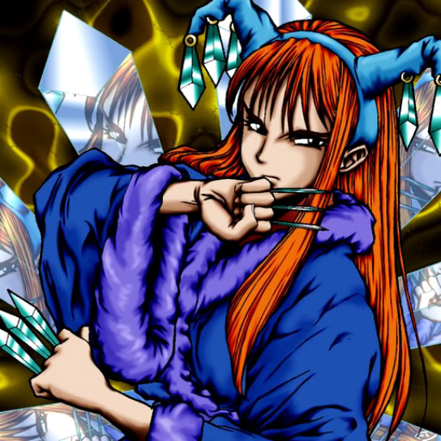

Queen's Double

Description: "When this card is flipped face-up, all Princess of Tsurugi cards are increased 700 points."
STATS
ATK: 350
DEF: 300DECK COST
Deck Cost per Card: 12EFFECT NOT IMPLEMENTED
Fusion List (64 Possible Fusions)
- Queen's Double + Air Marmot of Nefariousness = Nekogal #2
- Queen's Double + Ancient Jar = Mystical Sand
- Queen's Double + Arlownay = Queen of Autumn Leaves
- Queen's Double + Bat = Cyber Soldier
- Queen's Double + Blackland Fire Dragon = Sword Arm of Dragon
- Queen's Double + Blast Juggler = Charubin the Fire Knight
- Queen's Double + Blocker = Cyber Soldier
- Queen's Double + Brave Scizzar = Cyber Soldier
- Queen's Double + Burglar = Nekogal #2
- Queen's Double + Candle of Fate = Charubin the Fire Knight
- Queen's Double + Clown Zombie = Armored Zombie
- Queen's Double + Crawling Dragon #2 = Sword Arm of Dragon
- Queen's Double + Crawling Dragon = Sword Arm of Dragon
- Queen's Double + Cyber Commander = Cyber Soldier
- Queen's Double + Dancing Elf = Celtic Guardian
- Queen's Double + Dark Plant = Dark Witch
- Queen's Double + Darkworld Thorns = Queen of Autumn Leaves
- Queen's Double + Disk Magician = Cyber Soldier
- Queen's Double + Fiend's Hand = Zombie Warrior
- Queen's Double + Firegrass = Queen of Autumn Leaves
- Queen's Double + Flame Ghost = Zombie Warrior
- Queen's Double + Flame Snake = Charubin the Fire Knight
- Queen's Double + Gale Dogra = Cockroach Knight
- Queen's Double + Ganigumo = Cockroach Knight
- Queen's Double + Griggle = Queen of Autumn Leaves
- Queen's Double + Haniwa = Mystical Sand
- Queen's Double + Happy Lover = Dark Witch
- Queen's Double + Hinotama Soul = Charubin the Fire Knight
- Queen's Double + Hoshiningen = Dark Witch
- Queen's Double + Jinzo #7 = Cyber Soldier
- Queen's Double + Kagemusha of the Blue Flame = Charubin the Fire Knight
- Queen's Double + Key Mace = Dark Witch
- Queen's Double + Laughing Flower = Queen of Autumn Leaves
- Queen's Double + Leghul = Cockroach Knight
- Queen's Double + Little Chimera = Nekogal #2
- Queen's Double + Lunar Queen Elzaim = Dark Witch
- Queen's Double + Man-Eating Plant = Queen of Autumn Leaves
- Queen's Double + Man Eater = Queen of Autumn Leaves
- Queen's Double + Mechanical Snail = Cyber Soldier
- Queen's Double + Mechanical Spider = Cyber Soldier
- Queen's Double + Milus Radiant = Nekogal #2
- Queen's Double + Morphing Jar = Mystical Sand
- Queen's Double + Muka Muka = Mystical Sand
- Queen's Double + Mushroom Man = Queen of Autumn Leaves
- Queen's Double + Mystical Sheep #1 = Nekogal #2
- Queen's Double + Mystical Sheep #2 = Nekogal #2
- Queen's Double + One-Eyed Shield Dragon = Dragon Statue
- Queen's Double + Petit Angel = Dark Witch
- Queen's Double + Petit Dragon = Dragon Statue
- Queen's Double + Phantom Ghost = Zombie Warrior
- Queen's Double + Minomushi Warrior = Zombie Warrior
- Queen's Double + Pot the Trick = Mystical Sand
- Queen's Double + Prisman = Mystical Sand
- Queen's Double + Rainbow Flower = Queen of Autumn Leaves
- Queen's Double + Shadow Specter = Zombie Warrior
- Queen's Double + Silver Fang = Nekogal #2
- Queen's Double + Skull Servant = Zombie Warrior
- Queen's Double + Steel Scorpion = Cyber Soldier
- Queen's Double + Stone Ghost = Mystical Sand
- Queen's Double + The Judgement Hand = Judge Man
- Queen's Double + Torike = Nekogal #2
- Queen's Double + Weather Control = Dark Witch
- Queen's Double + White Dolphin = Wow Warrior
- Queen's Double + Wolf = Nekogal #2